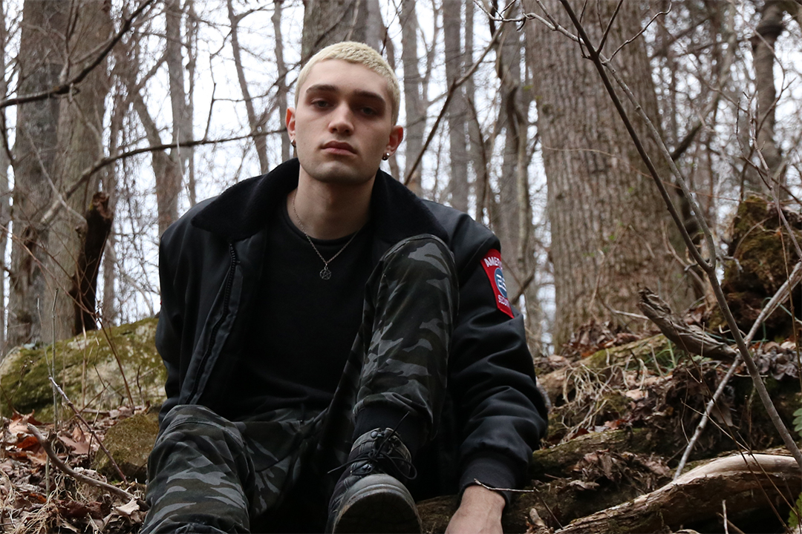

Alex Fresa is a multimedia artist and designer based in North Carolina. He is currently studying new media and sculpture at the University of North Carolina in Asheville with a focus in interactive web design and development. By incorporating these skills with his experience in video production and sound design, he strives to explore the ways in which cultural interfaces and other new media devices impact the contemporary world and how they relate to the human condition.